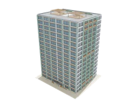
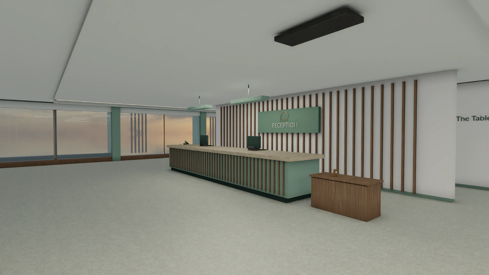
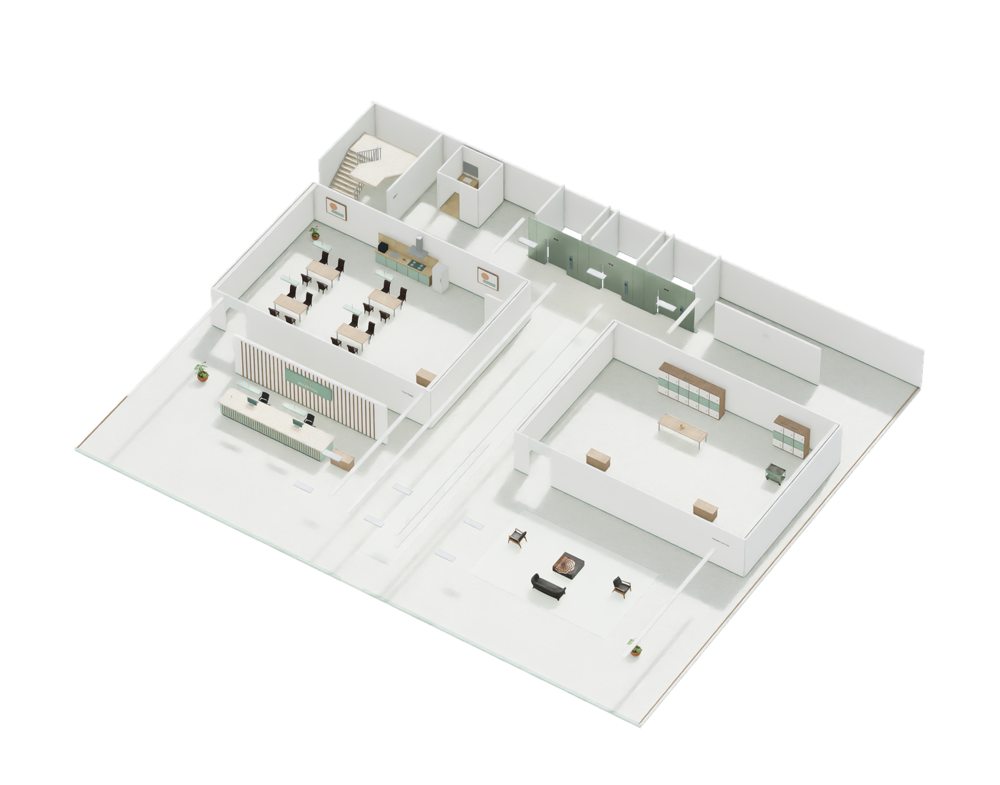

公寓低中高层到达
沿用 A01 至 A03 的目标层设计形成同一任务族的实例；每个正式跨层实例出生层必须不同于目标层。
通用任务 · 双本体验证待完成ENVIRONMENT 06 / 9
06APARTMENT


Interior
INSIDE THE ENVIRONMENT
Select a level to explore its interior.

CAPABILITIES & EMBODIMENTS
通用任务面向 FWMiniPiper 与 G1；专用任务测试指定本体的特有能力。当前均为待验证设计，不表示已完成物理执行。
一楼接待、包裹、餐食和社区借还；二楼洗衣、健身与共享用品；三至十四楼住户；十五楼 Work Club、Equipment Library 和 Common Table；十六楼住户。
沿用 A01 至 A03 的目标层设计形成同一任务族的实例；每个正式跨层实例出生层必须不同于目标层。
通用任务 · 双本体验证待完成在一楼根据实际停运状态从 E1、E2、E3 中选择可用梯，到十五楼公共区；不能把离得最近当成可用。
通用任务 · 双本体验证待完成需绑定可复现停运或恢复初态、可见提示、可行时间预算和通行历史裁判；恢复不得依赖无限等待或策略可调用的调试接口。
尚未启用正式评测；需完成初态配置、成功判据及指定本体的完整物理轨迹验证。
从入口感应区外接近门、完整通过并离开感应区，检查两种本体均可触发且门正确恢复。
通用任务 · 双本体验证待完成在三楼授权住户入口操作已解锁的手动门，进入、退出并关闭；不包含包裹。
通用任务 · 双本体验证待完成绑定三楼真实住户门关节；初态权限、把手轨迹和两种身体通行空间待验收。
尚未启用正式评测；需完成初态配置、成功判据及指定本体的完整物理轨迹验证。
按服务请求设置指定公共区域灯光，保持其他回路不变。
通用任务 · 双本体验证待完成在本场景指定可达空调面板上观察初态，将开关、模式和设定值改为任务要求；至少一项需改变，其他设备不变。评分使用面板与控制器实际状态，不要求室温达到设定温度。
通用任务 · 双本体验证待完成需验证两种夹爪不误触相邻按键，并接入模式、开关和设定值裁判；不把按钮几何存在当作可按或热效果证据。
尚未启用正式评测；需完成初态配置、成功判据及指定本体的完整物理轨迹验证。
将二楼 Laundry Clean Collection 的刚性衣物包装送到十六楼 1601 Service Cabinet；允许开门前暂放。
通用任务 · 双本体验证待完成需按本任务配置动态物品、身份或数量标签、交接与暂放区域及指令专属历史判据；源站点存在不代表新任务初态已实现。
尚未启用正式评测；需完成初态配置、成功判据及指定本体的完整物理轨迹验证。
将二楼洁净包装件送到 Fitness Towel Supply，再将 Used Towel Return 的封装件送到 Laundry Incoming Clothes，两个流向分别核对。
通用任务 · 双本体验证待完成需按本任务配置动态物品、身份或数量标签、交接与暂放区域及指令专属历史判据；源站点存在不代表新任务初态已实现。
尚未启用正式评测；需完成初态配置、成功判据及指定本体的完整物理轨迹验证。
从十五楼 Work Club Equipment Return 找到编号正确的轻型设备代理件，送到一楼 Community Lending Returns。
通用任务 · 双本体验证待完成需按本任务配置动态物品、身份或数量标签、交接与暂放区域及指令专属历史判据；源站点存在不代表新任务初态已实现。
尚未启用正式评测；需完成初态配置、成功判据及指定本体的完整物理轨迹验证。
将一楼 The Table Meal Collection 的密封外卖送到十五楼 Common Table，核对订单和实际释放。
通用任务 · 双本体验证待完成需按本任务配置动态物品、身份或数量标签、交接与暂放区域及指令专属历史判据；源站点存在不代表新任务初态已实现。
尚未启用正式评测；需完成初态配置、成功判据及指定本体的完整物理轨迹验证。
将一楼借用区的小件送到十五楼 Equipment Library，同时将一楼包裹区的指定件送到三楼 302 Service Cabinet；允许分别执行。
通用任务 · 双本体验证待完成需按本任务配置动态物品、身份或数量标签、交接与暂放区域及指令专属历史判据；源站点存在不代表新任务初态已实现。
尚未启用正式评测；需完成初态配置、成功判据及指定本体的完整物理轨迹验证。
从十六楼 1601 Service Cabinet 回收带待洗标签的刚性包装，送到二楼 Laundry Incoming Clothes；不能误放洁净区。
通用任务 · 双本体验证待完成需按本任务配置动态物品、身份或数量标签、交接与暂放区域及指令专属历史判据；源站点存在不代表新任务初态已实现。
尚未启用正式评测；需完成初态配置、成功判据及指定本体的完整物理轨迹验证。
从一楼包裹交接点取指定件，完成绑定自动入口通行，送到十五楼 Work Club，并按清单设置该区域灯与空调。
通用任务 · 双本体验证待完成需按本任务配置动态物品、身份或数量标签、交接与暂放区域及指令专属历史判据；源站点存在不代表新任务初态已实现。
尚未启用正式评测；需完成初态配置、成功判据及指定本体的完整物理轨迹验证。
本场景暂无专用任务。两种本体均可使用上方通用任务候选。